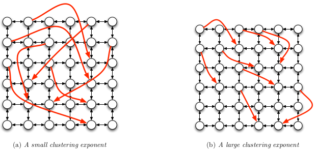
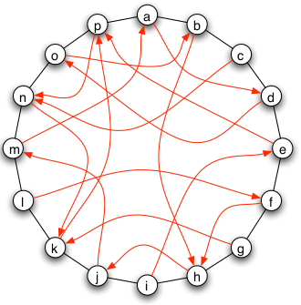
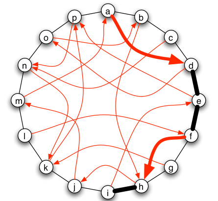
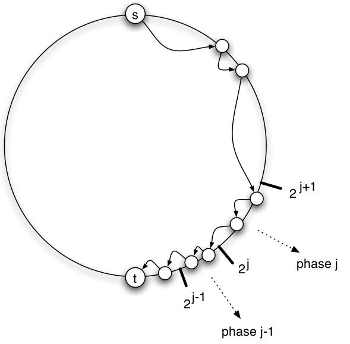

AR - Lesson 06
Indice
1 Fenomeno Small World
1.1 Six Degrees of Separation
Consideriamo l'esperimento dello psicologo statunitense Stanley Milgram (1967). In tale esperimento Milgram scelse una persona target che risedeva dalla parte opposta degli Stati Uniti. Dopodiché inviò una serie di lettere ad un gruppo di persone con le seguenti informazioni e regole:
- nella lettera era specificato nome, indirizzo, occupazione e altre informazioni riguardo il target
- chi riceveva questa lettera doveva inoltrarla (ovvero inviare una sola copia) ad un'altra persona, che secondo lui si avvicinava di più al target. Era possibile inviare la lettera ad una persona solo se la si conosceva di prima persona.
Al termine dell'esperimento Milgram osservò che circa un terzo delle lettere riuscirono ad arrivare al target, ma ancor più interessante
che tutte arrivarono mediamente in 6 passi.
Questo esperimento suggerì due proprietà importanti delle reti sociali:
- un'abbondanza di cammini brevi tra gli individui della rete, noto come fenomeno Small World (o "Six Degrees of Separation").
- tali cammini potevano facilmente essere individuati dagli individui, che altro non conoscono della struttura della rete se non il loro vicinato ed una euristica che gli consenta di intuire i vicini più plausibili per i cammini. Questo è noto come fenomeno della navigabilità.
Certamente un aiuto molto rilevante per la navigabilità è stata la presenza di alcune informazioni riguardo il target nella lettera (apparte il nome).
Per esempio se so che il target abita in un certa regione cercherò come prima cosa di inoltrare la lettera a una persona che geograficamente si avvicina.
Ancora, se so è abbastanza vicino a me e so anche che è un medico, certamente cercherò tra le mie conoscenze una persona che lavora (o che ha a che fare)
con l'ambiente sanitario (è meno probabile che mi avvicini se inoltro la lettera a un contadino).
Invece, se avessi avuto solamente il nome del target senza essere in grado nemmeno di individuare la sua città, molto probabilmente la lettera sarebbe stata
perduta.
Per quanto riguarda l'abbondanza di cammini brevi invece una possibile motivazione intuitiva è la seguente: supponiamo di avere conoscere in maniera diretta 100 persone, e che tali persone conoscono direttamente altre 100 persone. Allora con due "hop" posso raggiungere \(100 \cdot 100 = 10000\) altre persone. E se a loro volta gli amici dei miei amici conoscono 100 perso, in tre "hop" potrò raggiungere altri \(100 \cdot 100 \cdot 100 = 1000000\) persone, e così via…

Figura 1: Crescita puramente esponeziale delle conoscenze.
Purtroppo però questo ragionamento è inconsistente, in quanto si fa un'assunzione molto forte, ovvero che ogni proprio amico conosce altre 100 persone distinte. In un conteso reale è però poco plausibile questa proprietà: se sono amico stretto di due persone è motlo probabile che prima o poi essi si conoscano e diventino a loro volta conoscenti. Per esempio le reti di conoscenze dei social networks mostrano la presenza di una quantità elevata di triangoli tra gli individui, a conferma di quanto osservato. La caratteristica di una rete di avere molti triangoli è detta chiusura triadica (triadic closure), la quale diminuisce di molto il numero di individui raggiungibili con percorsi brevi rispetto al modello con crescita esponenziale.

Figura 2: La chiusura triadica diminuisce di molto il numero di persone raggiungibili con percorsi brevi.
1.2 The Watts-Strogatz model
Nel 1998 Duncan Watts and Steve Strogatz proposero un modello generativo di grafi aleatori che soddisfano due proprietà precedentemente viste: la presenza
di numerosi triangoli e la presenza di cammini brevi che collegano le entità della rete.
Il grafo generato in accordo col modello Watts-Strogatz è composto da due componenti:
- una componente deterministica che consiste in una griglia bidimensionale
- una componente aleatoria sovrastante
La griglia bidimensionale è un sottoinsieme di \(\mathbb{N}^2\), i cui punti sono i nodi del grafo.
Nella griglia ogni nodo ha un acro con i suoi vicini posti a destra, sinistra, sopra, sotto e in diagonale.
Più formalmente, fissato un \(n \in \mathbb{N}\):
\[
V \equiv \lbrace (i,j) \in \mathbb{N}^2 | 0 \leq i < n \land 0 \leq j < n \rbrace\\
E_1 \equiv \lbrace \lbrace (i,j), (a,b) \rbrace \in V^2 | \left[ a \equiv_n i+\alpha \land b \equiv_n j+\beta \right] \; \forall \alpha,\beta = -1, 0, 1 \rbrace
\]
Se si fa attenzione alla definizione di \(E_1\) (ovvero l'insieme degli archi della componente deterministica), si può vedere che la griglia ha una sorta di periodicità,
ovvero i nodi a un bordo della griglia sono collegati ai nodi sul bordo opposto.
In questa maniera otteniamo un primo grafo con un'alta quantità di triangoli (prima proprietà desiderata).
Per costruire la componente aleatoria fissiamo un \(k>1\), e per ogni nodo \(v \in V\) esso aggiungerà come ulteriori vicini altri \(k\) nodi scelti uniformemente a caso.

Figura 3: Costruzione modello Watts-Strogatz
Si può osservare una certa dicotomia tra gli archi deterministici e quelli aleatori:
- gli archi deterministici rappresentano un legame forte tra i nodi (strong tie), infatti tra due nodi legati da un arco deterministico esistono sempre dei triagoli.
- gli archi aleatori rappresentano invece delle conoscenze "alla lontana", e in quanto tale un legame debole (weak tie). Infatti è molto poco probabile trovare triangoli nella componente
aleatoria (a meno che \(k\) non sia molto grande).
A questo punto è doveroso chiedersi se effetivamente esistono cammini brevi tra i nodi della rete.
Intuitivamente parlando, se si considerano cammini composti dai soli archi aleatori, è poco probabile incontrare due volte uno stesso nodo in brevi distanze.
Perciò, nella compononete aleatoria la crescita dei nuovi nodi vicini è più simile al modello con crescita esponenziale (vedi Img. 1).
Successivamente Bollobàs & Ching diedero una dimostrazione formale a questo fenomeno. Più precisamente dimostrarono la presenza di cammini brevi in un modello
con molta meno randomness.
Consideriamo un nuovo modello simile a quello Watts-Strogatz, dove però solo un nodo su \(k\) ha archi random, e il numero di archi random è pari a 1.
Partizioniamo poi la rete in "città" di \(k \times k\) individui, e consideriamo il fenomeno small-world a livello di città.
Certamente ogni città avrà mediamente \(k\) archi random, e inoltre ogni coppia di nodi \(u,v\) di una stessa città sarà connessa da un cammino breve di lunghezza al più \(2k\).
Venne dimostrato che per trovare un cammino relativamente corto tra due nodi \(u,v\) di due città differenti, basta che
\(u\) raggiunga un nodo \(w\) nella stessa città (in al più \(2k\)) passi, e poi tramite pochi salti passare da dua città all'altra
fino ad arrivare alla città di \(v\).
In conclusione, anche con un piccolo ammontare di casualità, il modello Watts-Strogatz cattura il fenomeno di "mondo piccolo".
1.2.1 Navigabilità del modello Watts-Strogatz
Assodato che nel modello Watts-Strogatz esistono cammini relativamente corti tra i nodi della rete, quello che ci si chiede
è se tali cammini corti sono facilmente rintracciabili dai nodi, che conoscono solamente il loro vicinato e non la struttura dell'intera rete.
Supponiamo che un nodo \(u\) deve mandare un messaggio a un nodo \(v\) del quale conosce solamente le sue coordinate sulla griglia geometrica.
Il nodo \(u\) potrebbe mandare in broadcast il messaggio a tutti i suoi vicini (che sono 8 o 9), e chiedere a loro di inviare
il messaggio a tutti i loro vicini.
Questo metodo è noto come Flooding dei messaggi, ed è il metodo più veloce per raggiungere il nodo \(v\) (in quanto equivale
ad una visita in ampiezza).
Il problema è che dopo \(h\) salti, ci sarebbero circa \(8^h\) messaggi in circolazione, oltre al fatto che sarebbe scortese
chiedere di inviare 8 messaggi ai propri vicini.
Vorremmo un modo per trovare un cammino non troppo lungo tra \(u\) e \(v\) in modo da trasmettere una sola copia del messaggio,
e non un numero esponenziale, un po' come fecero le persone che parteciparono all'esperimento di Milgram.
Purtroppo fare questo tipo di ricerca miope1 in un modello Watts-Strogatz non è possibile. Per esempio il nodo \(u\) potrebbe pensare di mandare il messaggio al suo vicino che più si avvicina alla destinazione \(v\). Questo però potrebbe non essere il modo miglio per raggiongere \(v\). Per esempio potrebbe esistere un nodo \(w\) vicino di \(u\) che si allontana di 1 rispetto a \(v\) nella griglia deterministica, ma che però è direttamente collegato a \(v\) tramite la componente aleatoria.

Figura 4: Controesempio appena descritto
Purtroppo però \(u\) non può in alcun modo sapere che conviene inviare il messagio a \(w\), in quanto conosce solo il suo vicinato e non quello di \(w\).
Inoltre è stato anche dimostrato2 con questo tipo di ricerca (nota come ricerca decentralizzata), non solo non c'è
nessuna garanzia di trovare un cammino corto, ma mediamente i cammini trovati sono molto più lunghi dei cammini minimi che
esistono tra mittente e destinatario.
Sostanzialmente il problema è che gli archi random della componente aleatoria sono "troppo" casuali per dare un supporto alla ricerca decentralizzata. Infatti in un contesto sociale reale, è molto poco probabile che due persone totalmente a caso entrino in contatto. È invece più probabile avere archi casuali tra persone più vicine fisicamente, anziché tra persone molto lontane.
Quindi possiamo dire che questo modello non è navigabile, e quindi non rispecchia le caratteristiche volute.
1.3 Un modello per la ricerca decentralizzata
Vogliamo quindi definire un modello di generazione di reti sociali che in qualche modo consenta una ricerca decentralizzata
di caminni che non siano troppo più lunghi dei cammini minimi.
Basandoci sull'osservazione precedentemente fatta che è poco probabile avere archi random totalmente a caso, possiamo
definire un modello che aggiunge un parametro che controlla il range di copertura degli archi random3.
Più formalmente siano due nodi \(u,v\) con distanza \(d(u,v)\) nella componente deterministica sottostante, e sia una costante \(c \geq 0\) detta esponente di clustering. Perciò la probabilità che nella componente aleatoria esista l'arco \((u,v)\) è proporzionale alla quantità \(d(u,v)^{-q}\), più precisamente \[ \mathcal{P}( (u,v) \in E_2 ) = \frac{1}{Z_u} \cdot \frac{1}{d(u,v)^q} \] dove chiamiamo per comodità \(E_2\) l'insieme di archi random, e \(Z_u\) è un fattore di normalizzazione definito come \[ Z_u = \sum_{v \in V \setminus \lbrace v \rbrace} \frac{1}{d(u,v)^q} \]
Il fattore di normalizzazione è detto tale in quanto \[ \sum_{v \in V \setminus \lbrace v \rbrace} \mathcal{P}( (u,v) \in E_2 ) = 1 \]
Se consideriamo come componente deterministica una griglia simmetrica e periodica come nel modello Watts-Strogatz,
allora il fattore di normalizzazione sarà un certo \(Z\) uguale per tutti i nodi.
Questo in generale è vero per ogni componente deterministica completamente simmetrica.
D'ora in poi si farà riferimento a modelli che presentano questo livello di simmetria.
Osserviamo che quando \(q=0\) gli archi random sono totalmente casuali, in quanto la probabilità che tale arco esista è uguale per tutti4, risultando quindi uguale al modello Watts-Strogatz. Quando invece la \(q\) è molto grande sostanzialmente la probabilità di trovare archi random molto lunghi diventa molto piccola, perciò la componente aleatoria diventa sempre più simile alla sola componente deterministica. Ricapitolando quando \(q\) è piccolo la casualità è tanta, quando \(q\) è grande la casualità è poca.

Intuitivamente al variare di \(q\) esistono valori migliori e valori perggiori per la ricerca decentralizzata.
Già sappiamo che per \(q=0\) il valore è pessimo.
È possibile però dimostrare, che data una griglia \(d\)-dimensionale wrapped5, allora il componente di
clustering ottimale sarà esattamente \(q = d\).
Cerchiamo ora di dare una spiegazione intuitiva a questo fenomeno.
Riconsideriamo nuovamente l'esperimento di Milgram, dove però abbiamo il mittente A che vive negli Stati Uniti mentre
il destinatario B vive a Roma quartiere Garbatella.
Certamente la prima cosa che farebbe A sarebbe quella di inviare la lettera qunatomeno ad una persona che vive in Europa.
Anche se A non ha amici diretti in Europa a cui inviare la lettera, passandola ad altri amici negli USA troverà brevemente
qualcuno che ha amici che vivono oltre oceano.
Per semplicità assumiamo che A invii direttamente la lettera ad un suo amico C che vive a Mosca.
A sua volta C cerca tra i suoi amici qualcuno che abiti almeno in Europa Occidentale.
Da C la lettera passa a D che vive a Parigi.
Per fortuna D ha un amico in Italia che però vive a Perugia, e quindi la lettera finisce in Umbira.
D si ricorda di avere un lontano parente E nel Lazio, a cui invia la lettera.
Dopodiché E invia la lettera ad un suo collega F che abita a Roma Centocelle, il quale a sua volta
invierà la lettera a un amico G che abita a Garbatella.
Di li, sicuramente in un numero non esagerato di passi la lettera arriva a B.
Come si può intuire, il processo di ricerca decentralizzata procede per scale di risoluzione.
Infatti, anche se per pochi salti la lettera percorre relativamente poca distanza, presto farà un salto che riduce
drasticamente la distanza con la destinazione.
[aggiungere immagini]
Consideriamo una semplice griglia bidimensionale (con \(d = 2\)) wrapped, e partizioniamo i nodi in base alla distanza dal mittente \(u\). Più precisamente partizioniamo i nodi i gruppi in cui la distanza cresce esponenziale, ovvero i nodi da \(u\) tra 2 e 4, poi tra 4 e 8, tra 8 e 16, tra 16 e 32, …, tra \(2^h\) e \(2^{h+1}\). Dato che i punti in una circonferenza crescono come il quadrato del raggio, avremo che i nodi nell'intervallo tra \(2^h\) e \(2^{h+1}\) sarà proporzionale a \(2^{2h}\). Infatti \[ \vert \lbrace x \in V \vert 2^h \leq d(u,x) < 2^{h+1} \rbrace \vert \approx (2^{h+1})^2\pi - (2^h)^2\pi = 4\pi 2^{2h} - \pi 2^{2h} = 3\pi 2^{2h} \]
Consideriamo l'indice di clustering ottimo per la griglia bidimensionale, ovvero \(q=2\).
Preso un nodo \(x\) nell'intervallo tra \(2^h\) e \(2^{h+1}\), la probabilità che esista un arco random tra \(u\) e \(x\) è proporzionale
proprio \(2^{-2h}\), ovvero 1 diviso la distanza tra \(u\) e \(x\) che compresa tra \(2^h\) e \(2^{h+1}\), il tutto elevato a \(q\) che è pari a 2.
Assodato che la probabilità che \(u\) abbia un arco random con un nodo fissato \(x\) nell'intervallo \(2^h,2^{h+1}\) e proporzionale a \(2^{-2h}\), e sapendo che in tale blocco ci sono un numero di nodi proporzionale proprio a \(2^{2h}\), possiamo affermare che la probabilità che esista un arco random tra \(u\) e un nodo qualsiasi dell'intervallo \(2^h,2^{h+1}\) è una probabilità costante. Specifichiamo perché costante: Sia l'evento \(\mathcal{E}_x\) che occorre se esiste l'arco random tra \(u\) e il nodo \(x\) a distanza \(2^h \leq d(u,x) < 2^{h+1}\). Sappiamo che tale evento occore con probabilità \[ \mathcal{P}(\mathcal{E}_x) \propto d(u,x)^{-2} \propto 2^{-2h} \] Sia quindi l'evento \(\mathcal{E}\) che occorre quando esiste un arco random che collega \(u\) all'intervallo desiderato. Tale probabilità sarà pari a
\begin{align*} \mathcal{P}(\mathcal{E}) \textbf{(1)} &= \mathcal{P}(\bigcup_{x : 2^h \leq d(u,x) < 2^{h+1}} \mathcal{E}_x)\\ &= \sum_{x : 2^h \leq d(u,x) < 2^{h+1}} \mathcal{P}(\mathcal{E}_x)\\ &\approx |C_{2^{h+1}}(u) - C_{2^h}(u)| \cdot \mathcal{P}(\mathcal{E}_x)\\ &= \alpha 2^{2h} \cdot \beta 2^{-2h}\\ &= \gamma \end{align*}
per qualche costante \(\alpha, \beta, \gamma\).
Specifichiamo che \(C_r(u)\) è il cerchio di raggio \(r\) centrato in \(u\), mentre l'uguaglianza (1) è deta dal fatto che tutti
gli eventi del tipo \(\mathcal{E}_x\) sono mutuamente disgiunti.
L'ultimo risultato è molto forte, in quanto suggerisce che la probabilità che un arco random che parta da \(u\) consenta un salto di risoluzione è indipendente dalla risoluzione, che sia \(2^4\) o \(2^{100}\). Ciò implica che i weak ties sono distribuiti in maniera uniforme tra le risoluzioni, ammesso che poniamo \(q\) pari al valore ottimale \(d\).
1.3.1 Prestazioni della ricerca miope (decentralizzata)
Nella precedente sezione abbiamo dato un'idea intuitiva del perché una distribuzione inversamente quadratica dei weak ties rispetto
alle distanze rende la ricerca decentralizzata possibile.
Per semplicità verrà fatta un'analisi rigorosa (e non intuitiva) di questo fenomeno su una griglia 1-dimensionale, ovvero un anello.

Figura 6: Anello con random links.
All'interno dell'anello ogni nodo \(v\) ha esattamente 2 vicini, detti contatti locali (o local links), e nella compontente aleatoria da ogni nodo
\(v\) parte un arco diretto casuale \((v,w)\), detto contatto a lunga distanza (o long-range link), che esiste con probabilità \(d(v,w)^{-1}\).
Ricordiamo che la ricerca miope consiste essenzialmente nel passare il messaggio al nodo vicino che più si avvicina al destinatario.
Considerando la precedente figura, supponiamo che il nodo a voglia inviare il messaggio al nodo i dalla parte opposta dell'anello.
Tra i suoi vicini ci sono b e p collegati da local links e il nodo d collegato da un long-range link.
Tra i tre, il più vicino a i è il nodo d, e quindi a gli passa il messaggio.
Dopodiché d passa il nodo a e che è il suo vicino più prossimo alla destinazione, che a sua volta invia il messaggio al nodo f (per gli stessi ragionamenti fatti fin ora).
Infine f inoltra il messaggio attraverso il un long-range link al nodo h, che è recapita il messaggio al destinatario in quanto suo
diretto vicino.

Figura 7: Risultato della ricera miope da a ad i
Ovviamente questo non è un cammino minimo, per esempio se a avesse inviato il messaggio a b anziché a d, esso sarebbe arrivato
a destinazione in soli 3 passi.
Però sappiamo che a non ha alcuna informazione oltre alla visione del suo vicinato, e il cammino risultate dalla ricerca miope
è abbastanza corto da essere un risultato più che accettabile con le poche informazioni a disposizione.
Scelti una mittente \(s\) e un destinatario \(t\) a caso, definiamo la v.a. \(X\) come il la lunghezza di un cammino da \(s\) a \(t\) risultante
dalla ricerca miope, e sia \(\mathbb{E}\left[ X \right]\) la lunghezza media di tali cammini.
Considerando una ricerca miope da \(s\) a \(t\), diremo che essa si trova della fase \(j\) se il messaggio si trova ad una distanza
compresa tra \(2^j\) e \(2^{j+1}\) dal destinatario.

Osserviamo che le fasi possono essere al più \(\log_{2}{n}\).
Possiamo scrivere \(X\) come la somma delle v.a. \(X_1, X_2, ..., X_{log{n}}\) dove \(X_i\) è la lunghezza complessiva del cammino lungo la fase \(i\) \[ X = X_1 + X_2 + ... + X_{log{n}} \] Per linearità avremo che \[ \mathbb{E}\left[ X \right] = \mathbb{E}\left[ X_1 + X_2 + ... + X_{log{n}} \right] = \mathbb{E}\left[ X_1 \right] + \mathbb{E}\left[ X_2 \right] + ... + \mathbb{E}\left[ X_{log{n}} \right] \]
Di seguito il temoremo che stima \(\mathbb{E}\left[ X \right]\)
THM Sia \(\mathbb{E}\left[ X \right]\) la lunghezza media dei cammini risultati dalla ricerca miope tra una qualsiasi coppia di nodi, allora \[ \mathbb{E}\left[ X \right] \in O(\log^2{n}) \]
Per dimostrare il precedente teorema basta dimostrare che \(\mathbb{E}\left[ X_i \right] \in O(\log{n})\), per ogni fase \(i\). Prima di procedere alla dimostrazione del teorema però è necessario fare alcune considerazioni sul fattore di normalizzazione \(Z\) del modello.
Sappiamo che \(Z\) è pari alla somma di tutti i \(d(u,v)^{-1}\) per ogni \(u \neq v\). Però sappiamo che in un anello ci sono esattamente 2 nodi a distanza 1 da \(u\), 2 a distanza 2, 2 a distanza 3, …, 2 a distanza \(n/2\) (assumendo senza perdita di generalità che \(n\) sia pari). Perciò avremo che \[ Z = 2\left( 1 + \frac{1}{2} + \frac{1}{3} + ... + \frac{1}{n/2} \right) \] Sappiamo inoltre approssimmare la sommatoria in parentesi come \[ 1 + \frac{1}{2} + \frac{1}{3} + ... + \frac{1}{n/2} \leq 1 + \int_{1}^{n/2} \frac{1}{x} \,dx = 1 + \ln{(n/2)} \] Tornando a \(Z\) avremo che
\begin{align*} Z &\leq 2(1 + \ln{(n/2)})\\ &\leq 2(1 + \log_2{(n/2)})\\ &= 2 + 2\log_2{(n/2)}\\ &= 2 + 2\log_2{(n)} - 2\log_2{(2)} = 2\log_2{(n)} \end{align*}Perciò la probabilità che esista un random edge tra \(u\) e \(v\) sarè \[ \mathcal{P}((u,v) \in E_2) = \frac{1}{Z}d(u,v)^{-1} \geq \frac{1}{2\log{n}}d(u,v)^{-1} \] Procediamo ora alla dimsotrazione del teorema
Proof THM:
Siano i nodi \(s,t\) rispettivamente il nodo mittente e il nodo destinatario.
Abbiamo partizionato i nodi in base a distanze dalla sorgente \(t\) che si dimezzano, ovvero abbiamo definito
la fase \(j\) in cui il messaggio appartiene a un nodo \(u\) con distanza
\[
\frac{d(s,t)}{2^{j+1}} \leq d(u,t) < \frac{d(s,t)}{2^j}
\]
Certamente è vero che se esiste un arco \((u,v)\) tale che
\[
d(v,t) \leq \frac{d(u,t)}{2} < \frac{1}{2}\frac{d(s,t)}{2^j} = \frac{d(s,t)}{2^{j+1}}
\]
allora la fase \(j\) termina.
Abbiamo quindi un limite inferiore alla probabilità che la fase \(j\) termini
\begin{align*} \mathcal{P}(\mbox{la fase } j \mbox{ termina}) &= \mathcal{P}(\exists (u,v) \in E : d(v,t) < \frac{d(s,t)}{2^{j+1}})\\ &\geq \mathcal{P}(\exists (u,v) \in E : d(v,t) \leq \frac{d(u,t)}{2}) \end{align*}Definiamo ora con \(I\) l'insieme di tutti i nodi a distanza da \(t\) non più di \(\frac{d(u,t)}{2}\), ovvero \[ I \equiv \lbrace x \in V : d(x,t) \leq \frac{d(u,t)}{2} \rbrace \]
Ricordando che \(E_1\) è l'insieme di archi della componente deterministica ed \(E_2\) gli archi di quella aleatoria, avremo quindi che
\begin{align*} \mathcal{P}(\exists (u,v) \in E : d(v,t) \leq \frac{d(u,t)}{2}) &= \mathcal{P}(\exists v \in I : (u,v) \in E)\\ &= \mathcal{P}(\exists v \in I : (u,v) \in E_1 \cup (u,v) \in E_2)\\ &= \sum_{v \in I} \mathcal{P}((u,v) \in E_1 \cup (u,v) \in E_2)\\ &= \sum_{v \in I} \mathcal{P}((u,v) \in E_1) + \mathcal{P}((u,v) \in E_2)\\ &\geq \sum_{v \in I} \mathcal{P}((u,v) \in E_2) = \sum_{v \in I} \frac{1}{Z}\frac{1}{d(u,v)} \end{align*}Diamo ora una stima alla distanza \(d(u,v)\). Certamente \(u\) può raggiungere \(v\) tramite un cammino del tipo \(u \leadsto t \leadsto v\), e questo cammino sarà lungo almeno \(d(u,v)\) \[ d(u,v) \leq d(u,t) + d(t,v) = d(u,t) + d(v,t) \leq d(u,t) + \frac{d(u,t)}{2} = \frac{3d(u,t)}{2} \] perciò, per ogni \(v \in I\) avremo che
\begin{align*} \sum_{v \in I} \mathcal{P}((u,v) \in E_2) &= \sum_{v \in I} \frac{1}{Z}\frac{1}{d(u,v)}\\ &\geq \sum_{v \in I} \frac{1}{Z}\frac{2}{3d(u,t)}\\ (Z \leq 2\ln{n}) &\geq \sum_{v \in I} \frac{1}{2\ln{n}}\frac{2}{3d(u,t)}\\ &= \sum_{v \in I} \frac{1}{3d(u,t)\ln{n}}\\ &= \frac{|I|}{3d(u,t)\ln{n}} \end{align*}Ora dobbiamo stimare \(|I|\). Sappiamo che in \(I\) ci sono tutti quei nodi a distanza al più \(d(u,t)/2\), che siano dal lato destro o sinistro. Per definizione dobbiamo contare anche \(t\), in quanto \(d(t,t) = 0 \leq d(u,t)/2\). Avremo quindi \[ \vert I \vert = \lfloor \frac{d(u,t)}{2} \rfloor + \lfloor \frac{d(u,t)}{2} \rfloor + 1 \geq \frac{d(u,t)-1}{2} + \frac{d(u,t)-1}{2} + 1 = \frac{d(u,t)}{2} \] perciò \[ \sum_{v \in I} \mathcal{P}((u,v) \in E_2) \geq \frac{d(u,t)}{3d(u,t)\ln{n}} = \frac{1}{3\ln{n}} \]
Perciò l'evento complementare, ovvero l'evento che la fase \(j\) non termina se siamo nel nodo \(u\) è pari a \(1 - \frac{1}{3\ln{n}}\). Possiamo ora ricavare la probabilità che la fase \(j\) non termini entro \(h\) passi come segue \[ \mathcal{P}(X_j \geq h) \leq \left( 1 - \frac{1}{3\ln{n}} \right)^h \]
Per conculdere non resta che calcolare \(\mathbf{E}\left[ X_j \right]\). Iniziamo col comporre tale fattore in una sommatoria
\begin{align*} \mathbf{E}\left[ X_j \right] &= 1 \cdot \mathbf{P}( X_j = 1 ) + 2 \cdot \mathbf{P}( X_j = 2 ) + 3 \cdot \mathbf{P}( X_j = 3 ) + ... + \frac{n}{2} \cdot \mathbf{P}( X_j = \frac{n}{2} )\\ &= \mathbf{P}( X_j \geq 1 ) + 1 \cdot \mathbf{P}( X_j = 2 ) + 2 \cdot \mathbf{P}( X_j = 3 ) + ... + \left(\frac{n}{2} - 1 \right) \cdot \mathbf{P}( X_j = \frac{n}{2} )\\ &= \mathbf{P}( X_j \geq 1 ) + \mathbf{P}( X_j \geq 2 ) + 1 \cdot \mathbf{P}( X_j = 3 ) + ... + \left(\frac{n}{2} - 2 \right) \cdot \mathbf{P}( X_j = \frac{n}{2} )\\ &\vdots\\ &= \mathbf{P}( X_j \geq 1 ) + \mathbf{P}( X_j \geq 2 ) + \mathbf{P}( X_j \geq 3 ) + ... + \mathbf{P}( X_j \geq \frac{n}{2} )\\ &= \sum_{1 \leq h \leq n/2} \mathbf{P}( X_j \geq h ) \end{align*}
dove \(n/2\) è il massimo valore che può assumere \(X_j\) in quanto \(n/2\) è la distanza massima tra due nodi.
A questo punto possiamo stimare il valor medio della durata della fase \(j\) come
\begin{align*} \mathbf{E}\left[ X_j \right] &= \sum_{1 \leq h \leq n/2} \mathbf{P}( X_j \geq h )\\ &\leq \sum_{1 \leq h \leq n/2} \left( 1 - \frac{1}{3\ln{n}} \right)^h\\ &\leq \sum_{h \geq 1}^{\infty} \left( 1 - \frac{1}{3\ln{n}} \right)^h\\ &= \frac{1}{1 - \left( 1 - \frac{1}{3\ln{n}} \right)} = 3\ln{n} \in O(\log{n}) \end{align*}Di conseguenza l'ipotesi del teorema \[ \mathbf{E}\left[ X \right] = \sum_{j = 1}^{\log_2{n}} \mathbf{E}\left[ X_j \right] \in O(\log^2{n}) \] \(\square\).
1.3.2 Ricerca miope per \(q \neq d\)
Prendiamo il caso \(d = 1\) e \(q = 0\). Con \(q = 0\), la probabilità di avere l'arco random \((u,v)\) sarà pari a \(1/Z\). \[ \mathcal{P}((u,v) \in E) = \frac{1}{Z}\frac{1}{d(u,v)^0} = \frac{1}{Z} \] Osservaimo inoltre che \(Z\) sarà pari a \[ Z = \sum_{v \neq u}\frac{1}{d(u,v)^0} = n - 1 \]
Quindi la probabilità di avere un arco random sarè \(\frac{1}{n-1} > \frac{1}{n}\).
Definiamo ora l'insieme \(R\) di nodi a distanza al più \(\sqrt{n}\) dal destinatario \(t\) \[ R \equiv \lbrace x \in V : d(x,t) \leq \sqrt{n} \rbrace \]
Prendiamo il mittente \(s\) fuori da \(R\), avremo che la probabilità di entrare in \(R\) tramite un arco random \((u,v)\) sarà
\begin{align*} \forall u \not\in R\\ \mathcal{P}(\exists (u,v) \in (R, E-R)) &= \sum_{v \in R} \mathcal{P}( (u,v) \in E_2 )\\ &> \sum_{v \in R} \frac{1}{n}\\ &= \frac{|R|}{n} = \frac{2\sqrt{n}}{n} = \frac{2}{\sqrt{n}} \end{align*}
Sia quindi \(Y\) la v.a. che indica quanti passi ci vogliono per raggiungere \(R\) partendo da \(s\), con probabilità
\[
\mathcal{P}(Y \geq h) < \left( 1 - \frac{2}{\sqrt{n}} \right)^h
\]
con media
\[
\mathbf{E}\left[ Y \right] = \sum_h \mathbf{P}( Y ) \leq \frac{1}{1 - \left( 1 - \frac{2}{\sqrt{n}} \right)} = \frac{\sqrt{n}}{2}
\]
e questo di per se è già un tempo esponenzialmente più grande del tempo che ci impiegherebbe l'intera ricerca miope nel caso \(q=1\).
D'altro canto, se \(q > 1\), avremo che gli archi random sono più corti rispetto al caso \(q=1\), perciò la ricerca miope non migliora.
Addirittura per \(q\) abbastanza grande la rete tende ad essere composta dalla sola componente deterministica.
Di seguito un teorema che racgiude tutti questi raggionamenti
THM sia \(X\) la variabile aleatoria che indica la lunghezza del cammino trovato dalla ricerca miope su un anello di \(n\) nodi. Comunque si sceglie un \(q \neq 1\) esistono sempre due costanti \(\alpha_q\) e \(c_q\) tali che \[ \mathbf{E}\left[ Y \right] \geq a_q \cdot n^{c_q} \]
Ribadendo che il tutto vale nel caso in cui la componente deterministica sia un anello di \(n\) nodi, si possono estendere tutti i raggionamenti anche per un qualsiasi \(d > 1\), a scapito di calcoli più complessi.